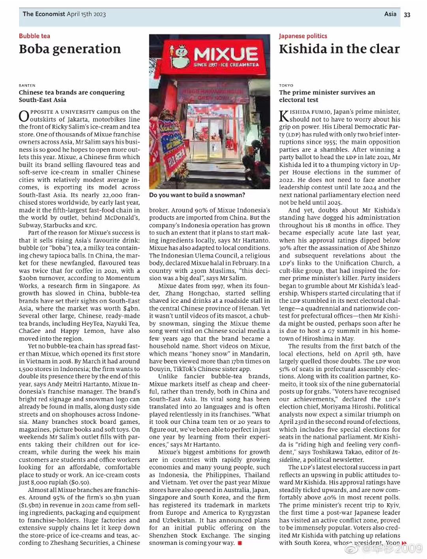
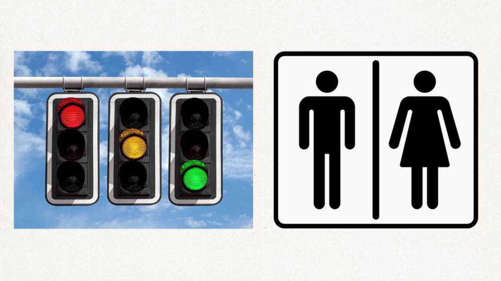
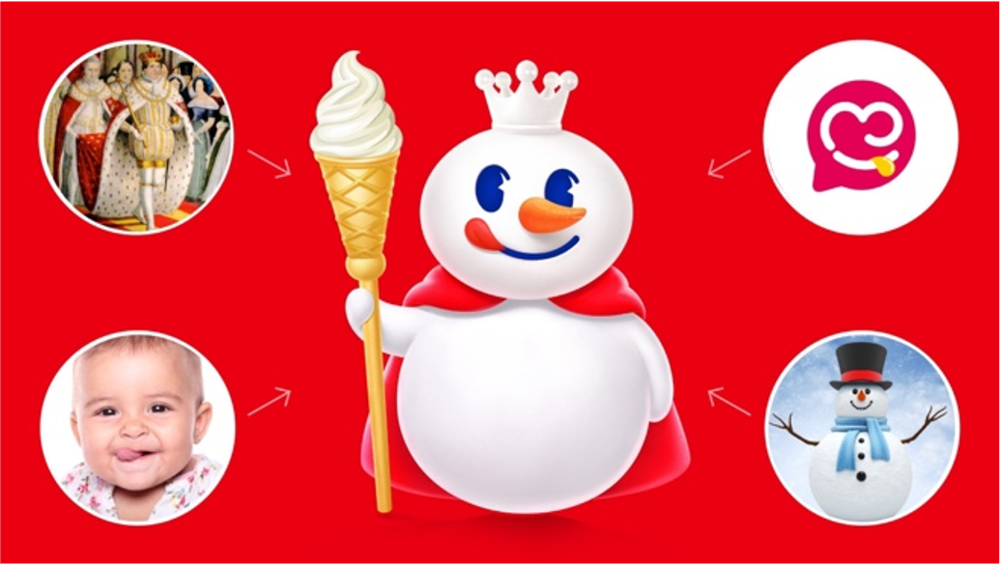
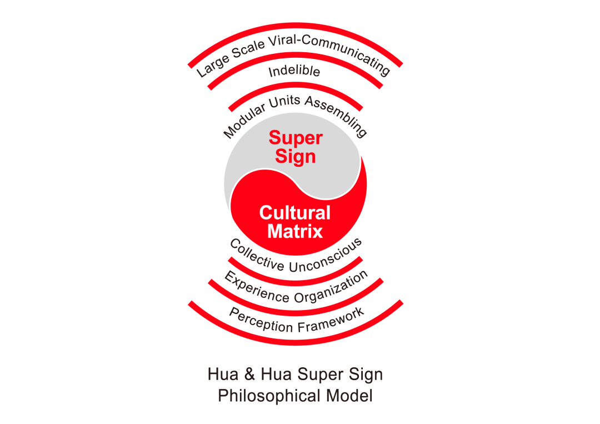
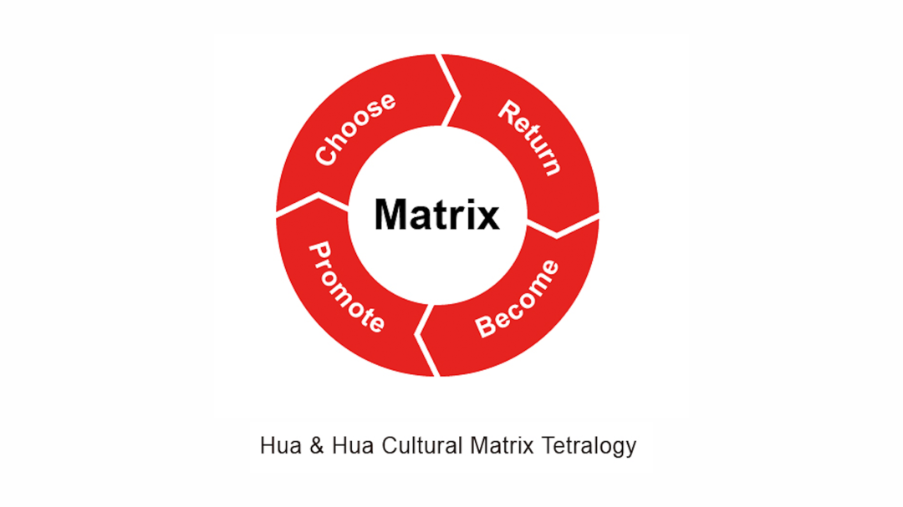
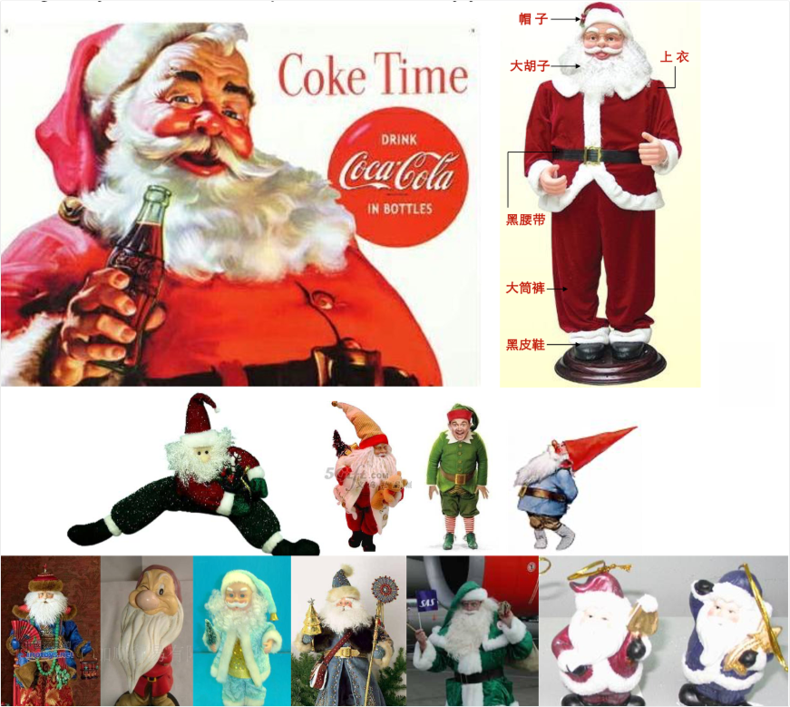
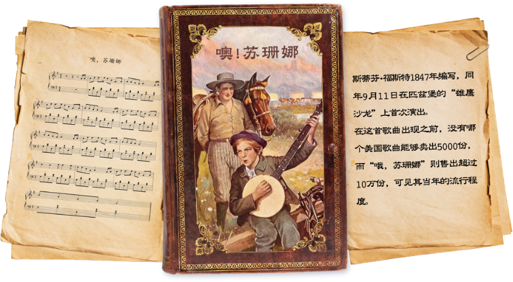

In April 2023, The Magazine ‘The Economist ranked Mixue as the world's fifth-largest fast-food chain by outlet count, trailing behind McDonald's, Subway, Starbucks, and KFC, thus bringing this Chinese ice cream and tea brand into the top-tier of the global business landscape. The success of Mixue, particularly its rapid brand growth in overseas markets, is supported by Hua & Hua's Super Sign method.

In 2013, the founders of Hua & Hua, Sam Hua, and Nan Hua, published the book "Super Sign Is Super Creativity", later releasing the English version titled "Super Signs." In this book, they openly stated: "Super Signs are symbols that everyone is familiar with and will follow their instructions. By “grafting” Super Signs into a brand, a new brand can become like an old friend to millions of consumers overnight, quickly establishing brand preferences, and triggering bulk buying."
Mixue serves as the benchmark case for Hua & Hua's Super Sign method. There are two characteristics of Super Signs defined by Hua & Hua: ‘everyone is familiar with them, and everyone follows their instructions’. Two examples cited in the book are the symbols used for male and female washrooms and traffic lights, which are culturally familiar to everyone, and everyone follows their instructions.

The purpose of Hua & Hua's Super Sign method is to set the standard for all brand identity designs and all creative marketing communications, whether it is logo design, copywriting, packaging design, outlet design, or exhibition design, using the efficiency and effectiveness of symbols like those used in restroom signs and traffic lights.
Regarding familiarity, in the book "Super Sign Theory and Examples" sponsored by Hua & Hua-CUZ (Super Sign Institute of Hua&Hua & Cuz), it refers to a ‘Shared Cultural Contract’. Only elements that everyone is familiar with, and no abnormal designs are created because only when everyone is familiar can there be a ‘Shared Cultural Contract’ and effective communication.
Regarding ‘following instructions’, it refers to the purpose of communication, which is consumers' behaviour. Two behaviours are required from consumers: one is to buy from us, the purchase behaviour; and the other is to spread for us - the word-of-mouth communication behaviour. Therefore, all creative designs are instructions to elicit behaviours. Hua & Hua's method is behaviourist and action oriented.
Mixue’s logo designed by Hua & Hua, features a crowned and cloaked snowman holding an ice cream sceptre. The elements such as a snowman, crown, cloak, sceptre, and ice cream are all in a standard form, like other common signs. This reflects Hua & Hua's design philosophy, aiming to make the brand image resemble a public sign. The significance of a public sign is twofold: firstly, it ensures a Shared Cultural Contract, guaranteeing no ambiguity, no distractions, and no redundancy. Secondly, it emphasizes commonality and scale, rather than being out-of-touch or niche, which is crucial for businesses aiming for international scalability.
To ensure no ambiguity, distractions, or redundancy, the snowman designed by Hua & Hua for Mixue resembles a snowman from a children's picture book. It cannot be an uncommon snowman, but a snowman recognized by everyone worldwide. Everyone sees it and recognizes it as a snowman without doubts. Since the snowman wears a crown, it is naturally referred to as the Snow King.

Therefore, Hua & Hua's designs do not seek uniqueness but instead instil a sense of familiarity, as we believe that uniqueness will increase costs. The book Super Signs states that “Super Signs can make a new brand become like an old friend to millions of consumers overnight." This is because the design elements of Super Signs are already our "old friends".
All communication is the encoding and decoding of symbols. The integration of these common symbols constitutes a Super Sign that is easily accessible and bypasses the psychological defence mechanism of consumers around the world. Semiotics is the secret of Mixue’s rapid growth worldwide.
Hua & Hua asserts that all issues are philosophical problems, and we have introduced the Super Sign Philosophical Model to explain the Super Sign method.

In the middle lie ‘Super Signs’ and ‘Cultural Matrix’, with Super Signs originating from Cultural Matrix. It can be asserted that if there exists a Cultural Matrix, it is a Super Sign; if there is no Cultural Matrix, no Super Sign exists. So, what exactly is a Cultural Matrix?
A Cultural Matrix includes all of human civilization, comprising the elements of our lives that constantly recycle themselves. This kind of repetition occurs to the extent that it evolves into a shared experience, common knowledge, and a collective memory. It is a modular unit of our experience, passed down through generations by our ancestors. It constitutes something that everyone is familiar with; believe in; be influenced by; be manipulated by and then finally they obey without thinking.
A cultural matrix is the culture in which we were raised in. They are the cyclical parts of our lives, for example, Christmas is a major cultural matrix because people all around the world celebrate Christmas every year. We also have a small cultural matrix like when people say ‘cheese’ when taking photos. To use Cultural Matrix as marketing communication resource, it can be broken down into four steps, namely a ‘Cultural Matrix Tetralogy’. These steps include the following:
1. Choose a Cultural Matrix.
2. Return to the Cultural Matrix.
3. Be the Cultural Matrix.
4. Promote the Cultural Matrix

A good example of where these steps were applied, in 1937 The Coca-Cola Company wanted to figure out a way to sell more Coca-Cola in winter this was when Coca-Cola commissioned an artist to assist in their Christmas marketing campaign. This artist chose a major cultural matrix ‘Christmas’ and created the super sign ‘Santa Claus’, with a red and white jacket and hat which were the colours of Coca-Cola. Before that, the image of Santa Clause did not have a set colour scheme. They were sometimes portrayed in blue, sometimes green but never red and white. After choosing and returning the cultural matrix, the Coca-Cola Santa Claus came to be the only Santa Claus, which led to its being spread and promoted across the world. That’s how Coca-Cola used the ‘Cultural Matrix Tetralogy’ even though they didn’t know the specifics of the theory yet.

Hua and Hua used the ‘Cultural Matrix Tetralogy’ in their TV commercials when working with the toothpaste brand Tianqi in 2003. In these commercials, people are seen taking pictures together and shouting ‘tianqi’ before the picture is taken showing their bright smiles and teeth. It took the established cultural concept of saying a specific word that encourages a showing of an open smile and of course showing teeth for example ‘Cheese’ and replaced it with the name of the brand since saying this word encourages the same dental positioning as the already internationally established word ‘cheese’ or the Chinese established word qiézi which means eggplant. The benefit of saying ‘tianqi’ is that its more exaggerated and exciting compared to its contemporary in ‘qiézi’.
At the base of the Super Signs Philosophical Model lies ‘Perception Framework’. This framework serves as the means through which an individual processes sensory information into personal experience, carrying with it a priori philosophical implication. A priori philosophy finds its roots in Kant's philosophy of Transcendental Idealism. Prior to Kant, the empiricist philosophy, as championed by Francis Bacon, proposed that all human knowledge stems from experience. Kant highlighted that the capacity of human beings to convert sensory-acquired information into experience does not result from learning or experiences but is present at birth and prior to experience. This distinction separates experience from a priori.
A priori does not represent human intelligence; rather, it serves as the processor of human intelligence. In this context, I prefer to refer to it as the Perception Framework. It is important to recognize that modern Artificial Intelligence (AI) is closely connected to the philosophy of a Priori Idealism. ChatGPT, built upon a large language model, is creating a Perception Framework, a processor. It is possible for AI to surpass human abilities because its processing logic aligns with that of human beings, and its processing power can far surpass that of human beings.
In summary, our journey begins with the recognition of the existence of the Priori Perception Framework, which is inherent and not acquired. This Perception Framework processes information to create experiences, with all experiences constituting an Experience Organization. Within this Experience Organization exists the Collective Unconscious, in which people from diverse cultures reside, each with their unique Cultural Matrix. The Collective Unconscious develops from the common ancestor of human beings, while the Cultural Matrix emerges from various ethnic groups and cultures.
The Perception Framework; Experience Organization; Collective Unconsciousness, and Cultural Matrix serve as the foundation and tools for creating Super Signs. We extract Modular Units, or standardized forms from the Cultural Matrix, to construct these signs. As the symbols align with the human Experience Organization, they can stimulate the Collective Unconsciousness. Therefore, Super Signs can be seamlessly integrated into the Experience Organization and are permanent upon installation, making them unforgettable and irremovable. Moreover, they prompt a desire to share with peers, enabling Mass Communication and word-of-mouth.
This commercial value of Super Signs is exemplified in the case of Mixue, where the snowman, crown, cape, sceptre, and ice cream constitute Modular Units derived from the Cultural Matrix. These elements are universally recognized units, easily fitting into the memories of people. If they were non-standardized forms, they would struggle to integrate into the public's Experience Organization. Even if we somehow managed to implant them in memory, they would likely be forgotten.
In addition to the image of the Snow King within Mixue's Sign System, there is also a catchy jingle comprising just three lines: "I love you, you love me, Mixue Ice Cream and Tea." These lyrics represent Hua & Hua's encoding method, known as Cultural Phrases. "I Love You" "You Love Me" and "Ice Cream and Tea" serve as the Modular Units, which easily install the uncommon brand name Mixue into the Collective Unconscious and Experience Organization. The song effortlessly bypasses the listeners' psychological ‘Defence Mechanism’, utilizing three Modular Units to deliver a non-Modular Unit. Additionally, the melody of the song, which comes from the American folk song "Oh! Susanna," has remained popular for 170 years, permanently encoding it in people’s minds and driving mass communication.

Songs like ‘Oh Suzanna’ are also the ‘Cultural Matrix’. They return to popularity around every ten years via parasitism found within the song’s melody. We transformed this classic song to be the brand’s permanent jingle. It links back to what was said before about the ‘Cultural Matrix Tetralogy’. Choose a song; return to the song, be the song and promote the song.
The signs of Super Signs transcend much more than just visuals, in fact semiology was created as linguistics which is the study of language. Language represents the most expansive sign system. Except for the linguistic signs, five signs correspond to the five senses: touch, sight, hearing, smell, and taste. These serve as tools for the assembling of Super Signs. During the establishment of the Mixue brand, we have employed visual (sight) coding through the Snow King, linguistic coding through "I love you, you love me, Mixue Ice Cream and Tea," and finally, musical (hearing) coding. Music constitutes another philosophical aspect of Super Signs.
Music itself embodies a philosophical essence, as asserted by German Philosopher Schopenhauer: "Music is will itself." Music improves content, as evidenced by the utilization of repetitions within lyrics. Repetitions in written texts might prove boring at first, however when these repeated texts are transformed into music, they become suitable and comforting. Music communicates in a universally understood language, employing a unique material — a mere few sounds — yet showcasing the profound clarity and truth of the inner nature of the world itself.
This representation is conveyed most clearly through the concept of ‘The Will.’ Assuming we have effectively provided an accurate, comprehensive, and detailed account of the music, effectively capturing what the music represents within the concept, this would also serve as an complete summary and description of the world within the same conceptual framework, creating genuine philosophy.
For me, music is a wormhole that connects the perception framework and cultural matrix of human beings. Through music we can essentially enter the universe within people’s minds, thus by composing a jingle, we create a wormhole.
There is a saying that states that a song is an ‘earworm’, meaning a song or a jingle that occasionally gets repeated within a person’s thoughts and memory which would lead them to singing the song unconsciously, this in turn leads to viral communication of the message. Almost like a ‘jingle-of-mouth’ instead of word-of-mouth in this sense.
That is how Mixue’s jingle "I love you, you love me, Mixue Ice Cream and Tea," works. The wormhole and the earworm effects are so powerful that people freely translate the lyrics of the song into more than twenty languages, amassing more than sixty billion plays globally. On average, each person on Earth has heard it ten times, and this number continues to grow each day.
This is the essence of philosophy; this is the essence of ‘The Will’.
Adapting a popular classical song into a jingle is a creative way that many advertising agencies routinely undertake. However, few have achieved the level of success attained by Hua & Hua. This is because while other companies may use such adaptations merely for one-time T.V. commercials, Hua & Hua employs them as integral components of a brand's Super Signs. Not only for Mixue, but the songs selected by Hua & Hua for other brands are all highly suitable and always utilized, much like their respective brand logos.
Hua & Hua serves as the birthplace of The Super Sign Theory. Beyond Super Signs, Hua & Hua has initiated ground-breaking innovations in communication, brand, and design theory. We will continue to pay attention to the Mixue brand and the Hua & Hua method.